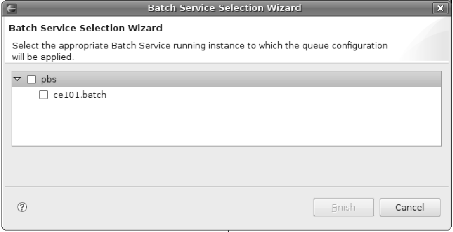

Once created, a QDL file can be applied to the underlying Batch Service in order for the queue configuration settings to take effect. The above functionality can be invoked by selecting the action button named: Apply Queue Configuration on the context menu. This action item is only visible when invoking the context menu (right-click) on one or more QDL files in a Grid Project. The action item loads the Batch Service Selection Wizard which is comprised of only one wizard page.
The wizard page is comprised of a CheckboxTreeViewer that displays the running Batch service instances and the Batch Service type they belong to in a parent-child style. As depicted on the image, there is one batch service instance which is currently running (child) and this instance belongs to a PBS Batch Service (parent).
Selecting a parent type indicates that the configuration settings included in the selected QDL file/s will be applied to all the running instances (children) that belong to the specific type. Conversely, selecting a specific running instance indicates that the configuration settings included in the selected QDL file/s will be applied only to that instance. Selecting one or more running instances enables the Finish button. Pressing the Finish button applies the QDL configuration/s to the selected Batch Service instances